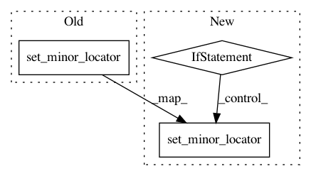

538fb748ba9b2e6615a6c2b22b07603c81e7e233,lib/matplotlib/scale.py,LinearScale,set_default_locators_and_formatters,#LinearScale#Any#,67
Before Change
axis.set_major_locator(AutoLocator())
axis.set_major_formatter(ScalarFormatter())
axis.set_minor_locator(NullLocator())
axis.set_minor_formatter(NullFormatter())
def get_transform(self):
After Change
axis.set_major_formatter(ScalarFormatter())
axis.set_minor_formatter(NullFormatter())
// update the minor locator for x and y axis based on rcParams
if rcParams["xtick.minor.visible"]:
axis.set_minor_locator(AutoMinorLocator())
else:
axis.set_minor_locator(NullLocator())
def get_transform(self):
The transform for linear scaling is just the
:class:`~matplotlib.transforms.IdentityTransform`.
In pattern: SUPERPATTERN
Frequency: 3
Non-data size: 3
Instances
Project Name: matplotlib/matplotlib
Commit Name: 538fb748ba9b2e6615a6c2b22b07603c81e7e233
Time: 2018-01-07
Author: efiring@hawaii.edu
File Name: lib/matplotlib/scale.py
Class Name: LinearScale
Method Name: set_default_locators_and_formatters
Project Name: has2k1/plotnine
Commit Name: d593fb0dd0d74b0e68e2d782a07d7c8f0de3a54c
Time: 2014-01-01
Author: smutch@unimelb.edu.au
File Name: ggplot/themes/theme_gray.py
Class Name:
Method Name: _theme_grey_post_plot_callback
Project Name: prody/ProDy
Commit Name: 580bb97ea58617a207dffdc2f59e9a2327431451
Time: 2018-02-21
Author: shz66@pitt.edu
File Name: prody/utilities/catchall.py
Class Name:
Method Name: showMatrix